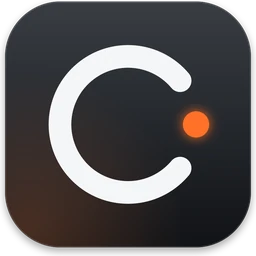
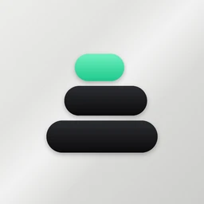
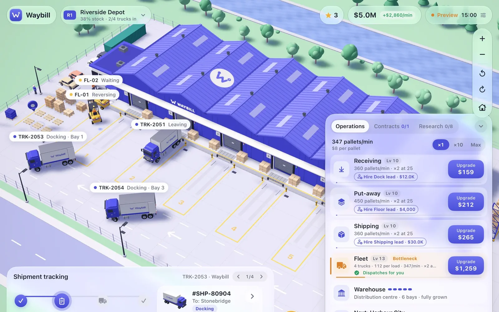
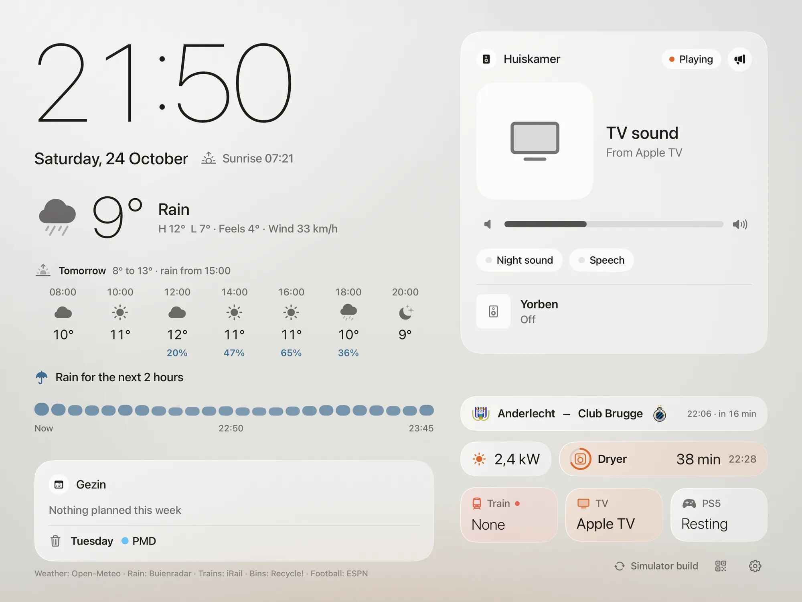

Design first
Every app starts with references and a design canvas. Code comes after the look is right.
Student at the University of Antwerp
Hi, I’m Yorben. I design and build native apps for iPhone, iPad and Mac. A portfolio tracker, a daily cockpit, two games and the quiet screen in our living room. Every one of them runs on my own devices, every day.
Work
Tap one to see what it does and how it looks up close.

macOS
My whole day in one window: agenda, mail that needs me, portfolio and music.

iPhone
Every market in one portfolio, in euro.
iPad · game
Run an airline from a satellite globe, down to 3D airports.
iPad · game
A logistics idle game in toy-scale 3D. Every truck really drives.

iPad Air 2 · living room
A calm screen beside the fireplace. Weather, trains, music and the house, on a 2014 iPad.

About
Every app starts with references and a design canvas. Code comes after the look is right.
Swift and Apple’s own frameworks, no trackers. Home Hub idles at about 2% CPU on a 2014 iPad.
My iPhone, my iPad, my Mac and our living room. If I don’t use it every day, it isn’t done.
Toolkit
Contact